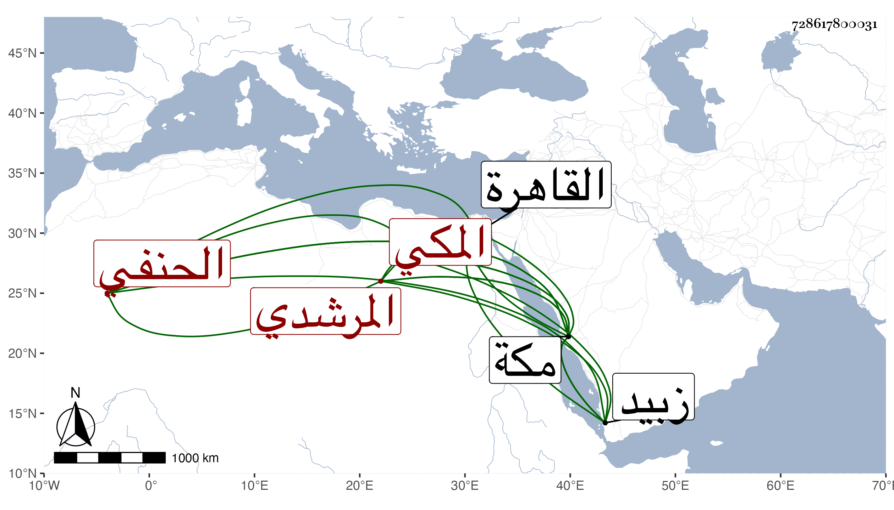

0902Sakhawi.DawLamic.ITO20230111-ara1.EIS1600.728617800031
Biography ID: 728617800031
122
أبو بكر بن عبد الغني بن عبد الواحد بن إبرهيم بن أحمد الفخر بن النسيم بن الجلال المرشدي المكي الحنفي الماضي أبوه وجده وابناه عبد الغني وعلي يعرف بابن عبد الغني المرشدي . ولد سنة اثنتين وثلاثين وثمانمائة بمكة وكان أبوه تركه بها وهو حمل وكانت منيته بالقاهرة في طاعون سنة ثلاث وثلاثين ونشأ هذا في كفالة زوج أمه أبي بكر الشحري فحفظ القرآن وعمدة الأحكام وأربعي النووي والمجمع والمنار وألفية ابن مالك وعقيدة الطحاوي وعرض على أبي البقاء بن الضياء في سنة إحدى وخمسين واشتغل قليلا في الفقه عند ابن عمه عبد الأول والزين قاسم بن قطلوبغا ثم عند ابن الغرز في مجاورته عندهم وربما حضر عند أبي حامد بن الضياء وفي العربية عند المحيوي عبد القادر المالكي والبرهان بن ظهيرة ولازمه وسمع على أبي الفتح المراغي وغيره وكذا أخذ عن اسمعيل الجبرتي وأجاز له جماعة واستقر في مشيخة الكلبرجية بمكة ولازم الانتماء للقاضي وذويه ورأيت وصف القاضي له في عرض ثاني ولديه بالشيخ الإمام العلامة الأمثل الأكمل المفيد وزاد أخوه في الوصف العالم الأوحد مفتي المسلمين مفيد الطالبين وافتتح بقوله الحمد لله الذي جعل في كنز العلم فخر الدنيا والدين وكذا القاضي أبو السعود وافتتح بقوله الحمد لله الذي نوع الفخر فجعل جلاله وكماله في فخر الدين ويذكر بملاءة كبيرة مع تشدق وعدم توثق ودخل في التجارة لزبيد وغيرها ولقي ابن اسمعيل الجبرتي فألبسه الخرقة ولعله اجتمع بأحد من بني الناشري . مات بعد أن تعلل مدة في سابع عشر ذي الحجة سنة اثنتين وتسعين وصلى عليه عقب صلاة الصبح ثم دفن عفا الله عنه .
